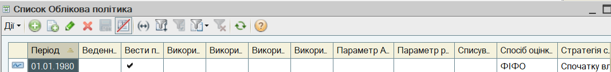
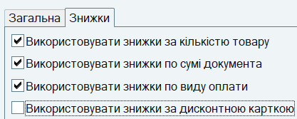
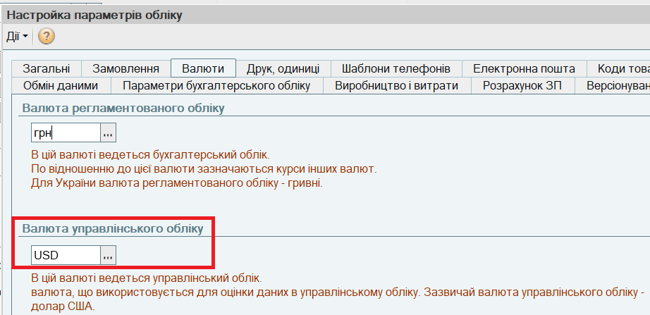

Встановлення параметрів облікової політики
1. Для введення параметрів облікової політики виберіть у меню Сервіс пункт Настройки обліку, а в ньому підпункт Облікова політика (управлінський облік). Параметри облікової політики за замовчуванням вже заповнені.

2. Для перегляду і редагування інформації про облікову політику натисніть кнопку  (або натисніть клавішу F2 або виберіть пункт меню Дії — Змінити). Відкриється діалогове вікно, в якому потрібно перевірити і за необхідності змінити параметри облікової політики торгового підприємства.На закладці Загальні встановіть параметри розрахунку собівартості:
(або натисніть клавішу F2 або виберіть пункт меню Дії — Змінити). Відкриється діалогове вікно, в якому потрібно перевірити і за необхідності змінити параметри облікової політики торгового підприємства.На закладці Загальні встановіть параметри розрахунку собівартості:
3. Перейдіть на закладку Знижки і встановіть параметри застосування автоматичних знижок покупцям:

ПРИМІТКА
В полі Період зазначається дата, починаючи з якої застосовується облікова політика. Якщо облікова політика торгового підприємства зміниться, необхідно ввести нову облікову політику, зазначивши нову дату, з якої вона застосовується. |
4. Натисніть кнопку ОК для збереження облікової політики торгового підприємства і закриття форми Облікова політика.
5. Для введення параметрів обліку, які не змінюються протягом роботи в інформаційній базі, виберіть в меню Сервіс пункт Настройки обліку - Настройка параметрів обліку. На закладці Валюти виберіть Валюту управлінського обліку.

Важливо. Вибрану валюту управлінського обліку неможна змінити після введення першого документу.